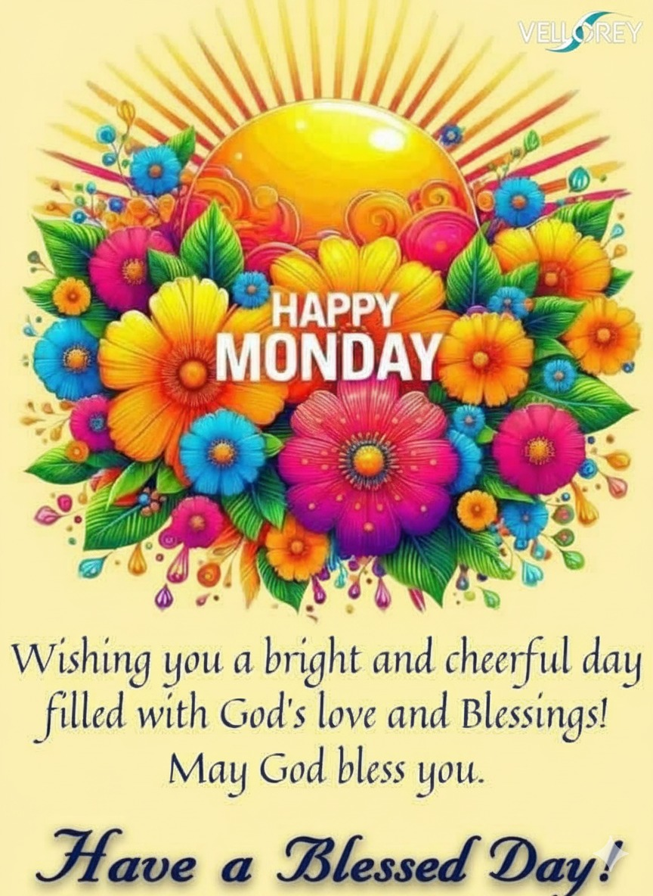
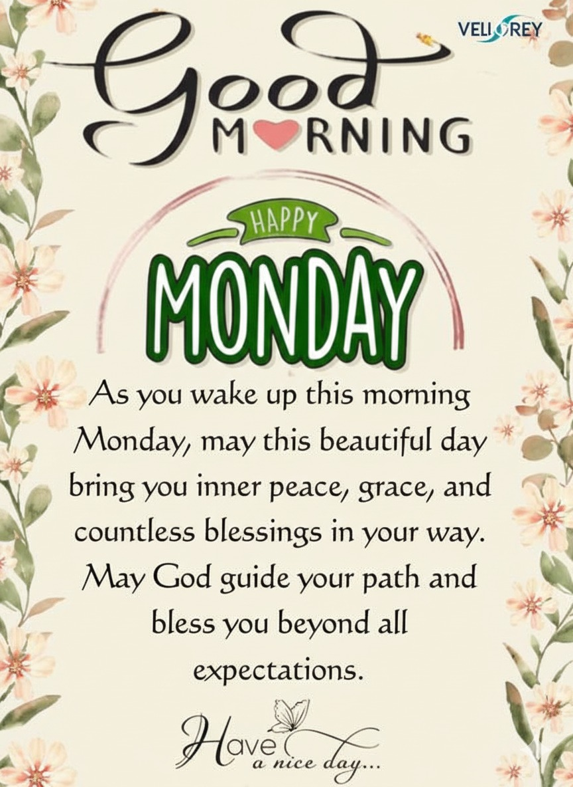

Vellorey
Vellorey
150+ Positive Monday Blessings, Messages, and Quotes 2025
150+ Positive Monday Blessings, Messages, and Quotes 2025 can transform your week from stressful to uplifting. Mondays are often seen as challenging, but they bring a fresh beginning, a chance to reset, and embrace peace, hope, and inspiration.
This guide offers over 150 Happy Monday blessings, prayers, quotes, and beautiful images to fill your heart with joy and happiness, boost productivity, and enhance spiritual health, making every Monday a positive start to your week.
Happy Monday is more than a greeting; it is a mindset. Each blessing and quote shared here will encourage you to approach your week with strength and courage, confidence and self-belief, and gratitude for new week opportunities. Let these messages inspire success and productivity, while also enhancing family and relationships.
Beautiful Monday Blessings
Beautiful Monday blessings can brighten your heart and make your mornings more meaningful. Each day brings a chance to reflect on faith and trust in God, giving you the courage to face challenges with wisdom and courage.
Simple words like, “May God bless you today and always”, can inspire positivity and optimism and strengthen your spiritual health.
Starting Monday with uplifting messages helps you carry gratitude and peace throughout the week. For example, “Let kindness and peace overflow” reminds you to share positivity with everyone around you.
Good Morning Monday Blessings
Good morning Monday blessings set the tone for the day. Each morning brings a choice to carry happiness within, and sending a kind message can uplift both your spirit and those of others.
Wishes like “Guide your steps and help you to work diligently”, or “Start each week with gratitude, strength, and a hopeful heart” combine daily encouragement with spiritual health.
Sharing blessings like “Good morning Monday blessings” with family, friends, or coworkers spreads joy and happiness and strengthens faith and trust in God.

Happy Monday Blessings
Happy Monday blessings bring cheer to a day often met with dread. Start your new week with peace, hope, and inspiration, and let the day feel lighter and brighter.
Blessings such as “May your heart remain gentle” help maintain a positive mindset and foster family and relationships.
Monday Blessings and Prayers
Monday prayers help you connect deeply with faith and trust in God. A heartfelt Monday prayer like “Heartfelt Monday prayer” can guide your week and bring strength and courage for the challenges ahead.
Prayers can be simple yet powerful. Saying, “Face challenges with wisdom and courage” reminds you that obstacles are opportunities to grow.

Faithful Prayers for a Blessed Monday
Faithful prayers for a blessed Monday provide peace and clarity. Each morning brings a choice to carry happiness within, and a prayer like “Faithful prayers for a blessed Monday” sets your intentions right.
Trusting in God allows you to act with confidence and self-belief and embrace new week opportunities.
Monday Blessings Quotes
Monday blessings quotes motivate the soul. Famous quotes, like “Opportunities don’t happen, you create them”, remind you to be proactive and embrace positivity and optimism.
Encouraging Monday Blessings Quotes
Encouraging quotes transform Monday blues into motivation. Statements like “Keep your eyes on the goal and not on the fear” encourage focus on success and productivity.
Inspirational Monday Blessings
Inspirational Monday blessings spark creativity and hope. Start your new week with peace, hope, and inspiration, reminding yourself that fresh beginnings are a gift.
Motivational Monday Blessings to Get Inspired
Motivational Monday blessings ignite energy and determination. Quotes like “Opportunities don’t happen, you create them” push you to embrace new week opportunities with a positive mindset.

Happy Monday, Images and Blessings
Happy Monday images and blessings visually inspire positivity and optimism. Adding quotes like “Motivational Monday blessings to get inspired” to images strengthens the impact and spreads joy.
Delightful Monday Greetings
Delightful Monday greetings create warmth and connection. Sending a thoughtful message like “Start each week with gratitude, strength, and a hopeful heart” makes family, friends, and colleagues feel appreciated.
Beautiful Monday Morning Wishes
Beautiful Monday morning wishes set a gentle and inspiring tone. Saying “Good morning Monday blessings” fosters gratitude and strength and encourages mindfulness throughout the week.
Good Evening & Good Night, Monday Blessings
Good evening and good night Monday blessings allow reflection and closure. Messages like “Good evening, Monday blessings” or “Good night, Monday blessings” help you end the day with faith, gratitude, and spiritual health.
Embracing Monday Blessings
Embracing Monday blessings encourages a mindset of gratitude, strength, and courage. Living with positivity transforms Mondays into opportunities for success and happiness.
Sharing on Social Media
Sharing Monday blessings spreads joy and happiness. Posting Happy Monday images with uplifting captions inspires others and encourages daily encouragement.
Reading in Daily Life
Integrating Monday blessings into daily life ensures consistent spiritual health, success, and productivity. Whether in meditation, journaling, or casual reading, these blessings cultivate faith and gratitude.
For Spiritual Health
Monday blessings enhance spiritual health and help maintain peace and hope. Practicing daily prayers and blessings fosters trust in God while encouraging positivity and optimism.
FAQs
Q: What are blessed words for Monday?
A: Blessed words include “May God bless you today and always”, and other phrases promoting joy and trust in God.
Q: What is a positive quote for a Monday?
A: “Opportunities don’t happen, you create them” inspires confidence and positivity.
Q: How to wish happy Monday?
A: Send morning wishes, uplifting messages, or share Happy Monday images to spread joy and happiness.
Q: How to share Monday blessings?
A: Through texts, social media, or emails with motivational messages and blessings.
Q: How to be positive on Monday?
A: Focus on gratitude, daily encouragement, and motivational blessings, reflecting on faith and new opportunities.